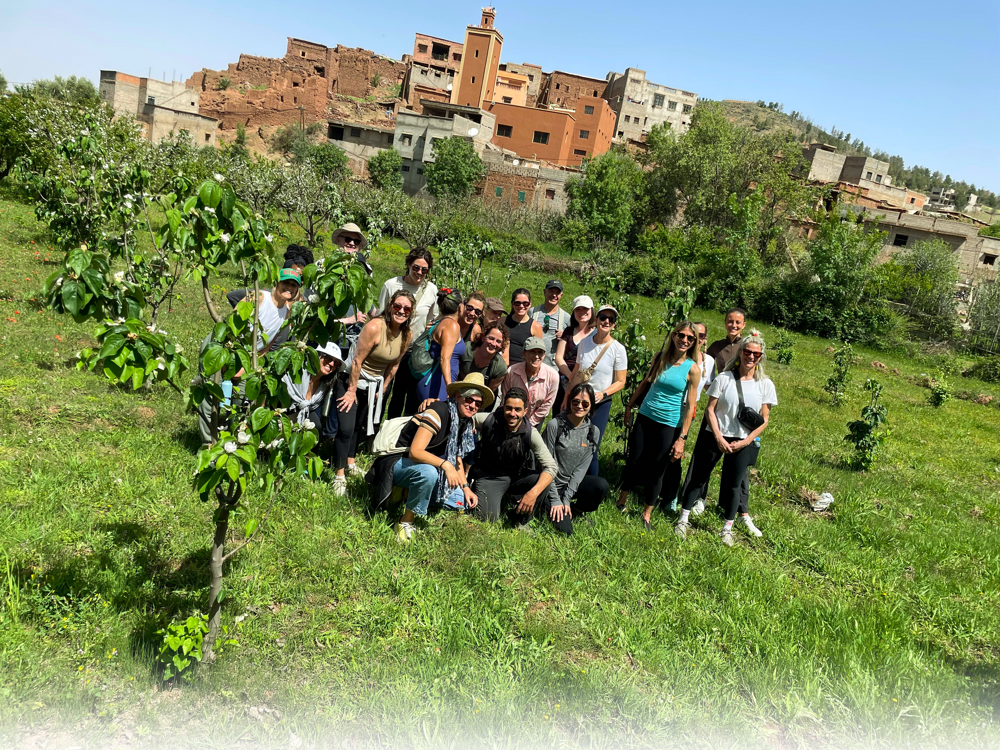
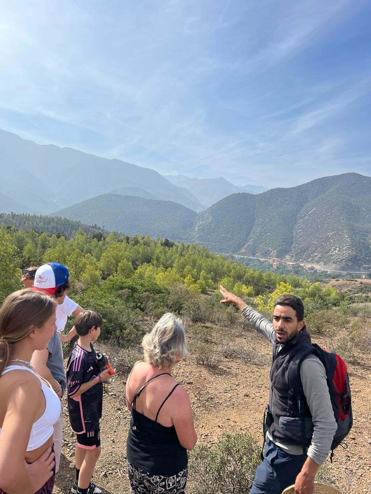

Trekking
Trekking
About Ourika Atlas Guide
Your local guide to the Ourika Valley & High Atlas
Ourika Atlas Guide is a local mountain guiding and trekking company in the Ourika Valley, near Marrakech, sharing the Atlas Mountains the way people who live here know them.
From Marrakech, the Ourika Valley is an easy escape to river terraces, Berber villages and the trails that lead to the Setti Fatma waterfalls. We run Ourika Valley day trips and Atlas Mountains hiking experiences for private groups and small groups, led by a local mountain guide who knows every path.
Authentic Berber culture is part of every day out. We keep groups small, respect the villages and trails we walk through, and encourage our guests to travel responsibly, so the valley stays a good place to live and to visit.

- Based in
- Ourika Valley
- Starting point
- Marrakech
- Mountains
- High Atlas
- Waterfalls
- Setti Fatma
How we guide
Local, authentic and responsible
- 01
Local expertise
Your Atlas Mountains guide lives in the Ourika Valley and knows its trails, villages, rivers and viewpoints.
- 02
Authentic Berber culture
Walk through mountain villages and meet the traditions of the High Atlas through the eyes of a local.
- 03
Responsible tourism
Small groups, respect for communities and the landscape, and a light footprint on every hike.

Meet your guide
Mohamed Oudra
Mohamed is a 35-year-old Berber mountain guide, born and raised in the Ourika Valley. He grew up among the villages, river paths and High Atlas peaks he now shares with visitors who want to see the mountains beyond the viewpoints.
He guides guests through mountain villages, hiking trails and the Setti Fatma waterfalls, always with time for the culture, traditions and stories of his community. Mohamed is known for his hospitality, his local knowledge and tours shaped around each group.
- Years old
- 35
- Born and raised in
- Ourika Valley
- Guide for
- High Atlas
Day trips from Marrakech
Ourika Valley tours & Atlas hiking
Trekking Hiking
Hiking Culture
CultureGood to know
Ourika Valley & Atlas Mountains guide: FAQ
Answers about Ourika Valley tours, Atlas Mountains hiking, the Setti Fatma waterfalls and private day trips from Marrakech.
Ourika Atlas Guide is a local mountain guiding and trekking company based in the Ourika Valley, near Marrakech. Every experience is led by Mohamed Oudra, a Berber mountain guide who was born and raised in the valley.
We offer Ourika Valley day trips from Marrakech, including the Atlas Trek and Setti Fatma Waterfalls Adventure, the Ourika Valley Hiking Adventure and the Atlas Trek and Berber Villages Experience. We also arrange activities around Marrakech on request.
No. Atlas Mountains hiking with us can be shaped around your group. Tell us your fitness level and who is coming, including children or older travellers, and we will suggest a route that suits you.
Yes. The Setti Fatma waterfalls are part of our Atlas Trek and Setti Fatma Waterfalls Adventure in the Ourika Valley. Your guide confirms the timings and meeting point with you when you book.
Yes. We run private tours and small-group tours, so you can explore at your own pace with a local guide. Send us your preferred date, group size and interests and we will plan the day with you.
A local guide knows the trails, the villages and the people of the High Atlas. With Mohamed, you walk through the Ourika Valley with someone who grew up there and can share its culture, traditions and landscapes first-hand.
We keep groups small, respect the villages and trails we walk through, and encourage guests to take their rubbish with them and to treat local communities with courtesy. Our aim is for the Ourika Valley to stay a good place to live and to visit.
The quickest way is WhatsApp on +212 661886234. You can also use the contact page or email trekkingatourika@gmail.com with your date, group size and the experience you have in mind.